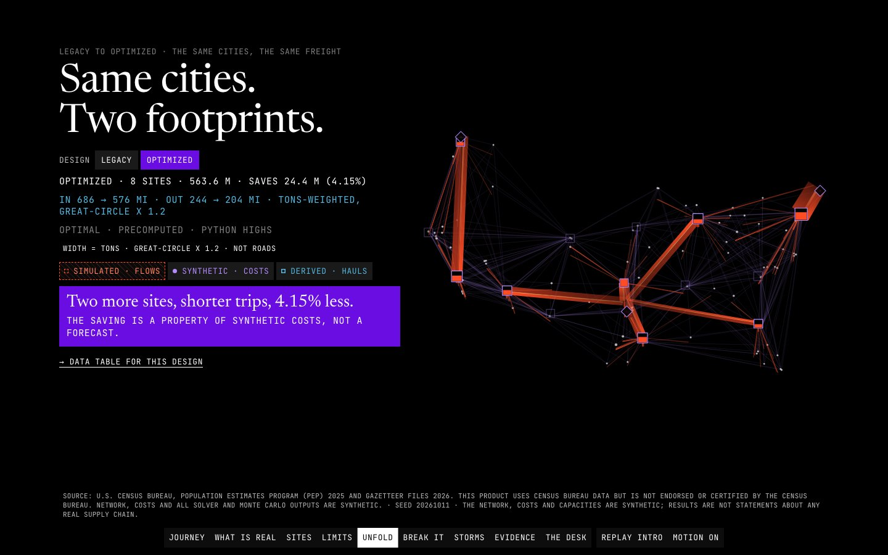

Data story · Operations research · In-browser optimisation · 2026-10
Where to Keep It, and How to Move It
A 14-site, 100-city freight network on real Census anchors with synthetic costs, redesigned by a mixed-integer model that also tells you which promise breaks first when you push it, solved in Python and again in your browser.

Census Bureau Population Estimates Program 2025 and Gazetteer files 2026 anchor the cities (public domain; this product uses Census Bureau data but is not endorsed or certified by the Census Bureau). The network, costs, capacities and freight rates are SYNTHETIC and every solver and Monte Carlo output is SIMULATED: results are not statements about any real supply chain.
01 — The problem
A distribution network is a set of promises: every city gets its goods, every site stays within capacity, every plant ships no more than it makes. Designing it means choosing which sites to open and how to route freight, and the interesting part is what happens when the promises cannot all hold.
The questions: given real cities and plausible but invented costs, how much does an optimised footprint save over a legacy one, which promise breaks first when demand, capacity or sites are squeezed, and how does each design behave under 500 simulated disruptions?
02 — What I built
An offline model and a static site joined by a contract.
- Model: a seeded generator over 100 real US places (63.8 M people), a facility-location MILP with commodity flows solved by HiGHS, strict and relaxed (elastic) variants, duals, and a disruption Monte Carlo of 500 draws that re-optimises flows around fixed designs.
- Site: a scroll story from the journey of one product to the unfolded network, a break-it lab that switches strict to relaxed and names the worst-hit site, storms with CVaR, and a desk where you change sites, supply and capacity and solve the same model live in a worker.
- Every figure carries an honesty tag: OBSERVED for the Census anchors, SYNTHETIC for costs and network, SIMULATED for solver and Monte Carlo output.
03 — How it was built
- 01
Anchor on real places, invent the rest openly
Cities and populations come from Census files; a join ledger reconciles gazetteer rows to usable places exactly. Costs, capacities and freight rates are synthetic from a seeded generator, and the site says so on every view.
- 02
Design the network
The MILP opens 8 of 14 candidate sites and routes 2,589,781 tons a year, for 563.6 M USD a year in synthetic cost. The legacy footprint costs 24.4 M more (a 4.15% saving), with inbound hauls shortening from 686 to 576 miles and outbound from 244 to 204.
- 03
Let it fail on purpose
The strict model reports Infeasible when supply, capacity or site count falls short; the relaxed model prices each broken promise. With site capacity at 0.3, 8 sites would have to handle 687,621 units more than they can, worst in Oklahoma City by 154%. Penalties are modelling devices, reported apart from operating cost.
- 04
Stress the designs
500 seeded disruption draws re-optimise flows around each fixed design and report mean, p95 and CVaR; the storm view shows both designs side by side. Tails are noisy at this draw count and the site says so.
- 05
Prove the browser matches Python
The browser builds the same LP text and solves it with HiGHS WebAssembly served from the site. 41 parity vectors reproduce status, hash and objective in both, and a JavaScript builder produced byte-identical LP text.
04 — Results
Model. 8 of 14 sites open, 563.6 M USD a year synthetic cost, 24.4 M (4.15%) below the legacy footprint; the saving is a property of invented costs, not a forecast. Strong duality, flow conservation and capacity checks pass independently of the solver.
Measured on the live site. Lighthouse x3 against the public URL: mobile performance 0.99 to 1.00, LCP 1.1 to 1.65 s, CLS 0, accessibility 1.00; desktop performance 1.00, LCP 0.36 to 0.42 s. At 1440 and 390 wide: 14 to 15 requests, 0 failed, 0 console errors, 0 external hosts. Tests: pytest 74, Vitest 64, Playwright e2e 28 of 28 (functional states, solver failure paths and a whole-document collision walk), browser parity 41 of 41 vectors.
Honest limits: all costs are synthetic, the Monte Carlo tails are noisy at 500 draws, and the final visual review was a single-reviewer read of screenshots at 1440, 768 and 390, not a fresh independent QA pass.
05 — What I'd do next
- Calibrate costs against a public freight benchmark so the saving can be argued from data, not assumed.
- Optimise designs against the disruption distribution instead of evaluating fixed ones.
- Add time: transit times and inventory, which this model deliberately does not have.